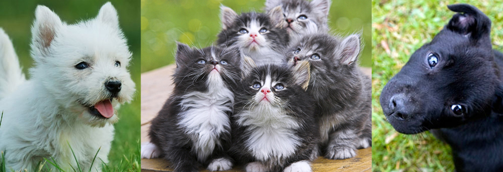

Home
Adoptable Pets
About Us
Success Stories

Montana Connected is a part of the Hill’s Pet Nutrition “Food, Shelter & Love” Shelter Feeding Program!
(c) Montana Connected 2012. All rights reserved.